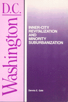

<body bgcolor="#FFFFFF" text="#000000" link="#0000FF" vlink="#CC0000" alink="#CC0000"><center><hr width="350" size="1" align="center" noshade>Using public education as a gauge to measure racial and ethnic change in urban areas<hr width="350" size="1" align="center" noshade><p><a href="https://cdcshoppingcart.uchicago.edu/Cart/ChicagoBook.aspx?ISBN=9780877224969&&PRESS=temple" target="_top">Buy this book!</a> | <a href="https://cdcshoppingcart.uchicago.edu/Cart/Cart.aspx?PRESS=temple" target="_top">View Cart</a> | <a href="https://cdcshoppingcart.uchicago.edu/Cart/Cart.aspx?PRESS=temple" target="_top">Check Out</a></p><p></p></center><!--none//--><h1>Washington, D.C.</h1>
<H2>Inner-City Revitalization and Minority Suburbanization</H2>
<h3>Dennis E. Gale</h3>
<P>cloth 0-87722-496-X $39.95, Nov 87, <FONT COLOR=#990033>Out of Print</FONT>
<br>paper 0-87722-777-2 $19.95, Aug 90, <FONT COLOR=#990033>Out of Print</FONT>
<BR> 259 pp
23&nbsp;tables 12&nbsp;map(s)
</P><BLOCKQUOTE><I>"This is a case study that can be read as much as a bellwether as for its specific insights on Washington. Gale skillfully brings the various themes of his analysis together to provide an overall perspective from which to speculate briefly about future directions of change."</I>
<br>&#151<b><I>Journal of Urban Affairs</I></b><I></I></BLOCKQUOTE>
<p>Quite apart from its imposing federal buildings, majestic national monuments, and glamorous international embassies, Washington has experienced the social and economic upheavals that have affected major metropolitan areas since World War II. Unlike most cities, however, the District of Columbia challenges the conventional wisdom that urban centers continue to deteriorate while suburbs persist as racially exclusionary enclaves. Since 1970, the city’s central core has witnessed vast revitalization and its minorities have migrated to the suburbs. While this demographic shift is not entirely unique to Washington, few cities have undergone the degree of change that has occurred in our national capital.
<p>In his assessment of the impact of racial, socioeconomic, migratory, and political shifts on the Washington area, Dennis Gale focuses on public education. Using it as a gauge of the character and quality of public services, he examines how rapid racial and ethnic change has affected local politics and public policy.
<BR>&nbsp;<h2>Reviews</h2>
<p><I>"[Gale] describes just bow the center city has been immeasurably improved and repaired, but nevertheless remains segregated&#151even if the color of the inhabitants has switched from black to white.... The book also documents how, in a sort of double leapfrog the poor families displaced by gentrification ended up in the outer neighborhoods of the District or spilled over into the poorer sections of Prince George's County, while the black middle class from those areas went on to suburbanize the rest of Prince George’s County.‘"</I>
<br>&#151<b><I>The Washington Post</I></b>
<p><I>"Gale writes from a planning perspective, and brings a welcome sensitivity to the role of the government in urban development. He thus provides the insight and knowledge to understand not just the range of possible futures, but also how Washington, DC, and its suburbs have arrived at their present state."</I>
<br>&#151<b><I>Choice</I></b>
<p><I>"[This book] is a thorough compilation of the enlightened wisdom on the economic success of the Washington area over the last few decades, and the effect it has bad on the area’s black population...a very useful one-volume reference work on class and race in the area."</I>
<br>&#151<b><I>Washington History</I></b>
<p><I>"A lively analysis that will be of great interest to students of the urban scene.</I>
<br>&#151<b><I>Cities</I></b>
<BR>&nbsp;<H2>About the Author(s)</H2>
<P><b>Dennis E. Gale</b> is Associate Professor of Urban and Regional Planing and Director of the Center for Washington Area Studies at the George Washington University.</P>
<BR><H2>Subject Categories</H2>
<p><A HREF="/tempress/urban.html" TARGET="_top">Urban Studies</a>
<BR><A HREF="/tempress/race.html" TARGET="_top">Race and Ethnicity</a>
<BR><A HREF="/tempress/sociology.html" TARGET="_top">Sociology</a>
</p>
<BR><h2 class="inpageheading">In the series</H2>
<P><I><a href="http://www.temple.edu/tempress/cities.html" onMouseOver="window.status='Click for other books in this series!'; return true;" onMouseOut="window.status=''; return true;" target="_top">Comparative American Cities</a></i>, edited by Joe T. Darden.
</p><p>No longer active.</p>
<p align="center"><a href="https://cdcshoppingcart.uchicago.edu/Cart/ChicagoBook.aspx?ISBN=9780877224969&&PRESS=temple" target="_top">Buy this book!</a> | <a href="https://cdcshoppingcart.uchicago.edu/Cart/Cart.aspx?PRESS=temple" target="_top">View Cart</a> | <a href="https://cdcshoppingcart.uchicago.edu/Cart/Cart.aspx?PRESS=temple" target="_top">Check Out</a></p><p><font face="Arial" size="1"><a href="copyright.html" onMouseOver="window.status='Web Copyright Policy';return true;" onMouseOut="window.status=''" title="Web Copyright Policy">&copy;</a> 2015 <a href="http://www.temple.edu" target="new" onMouseOver="window.status='Link to Temple University home page';return true;" onMouseOut="window.status=''" title="Link to Temple University home page">Temple University</a>. All Rights Reserved. http://www.temple.edu/tempress/titles/504_reg.html</font></p>